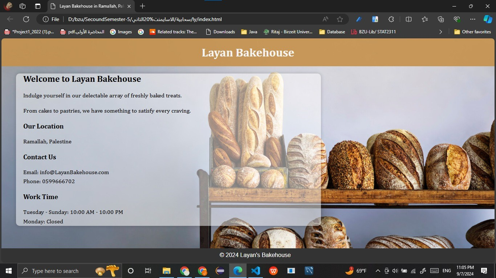
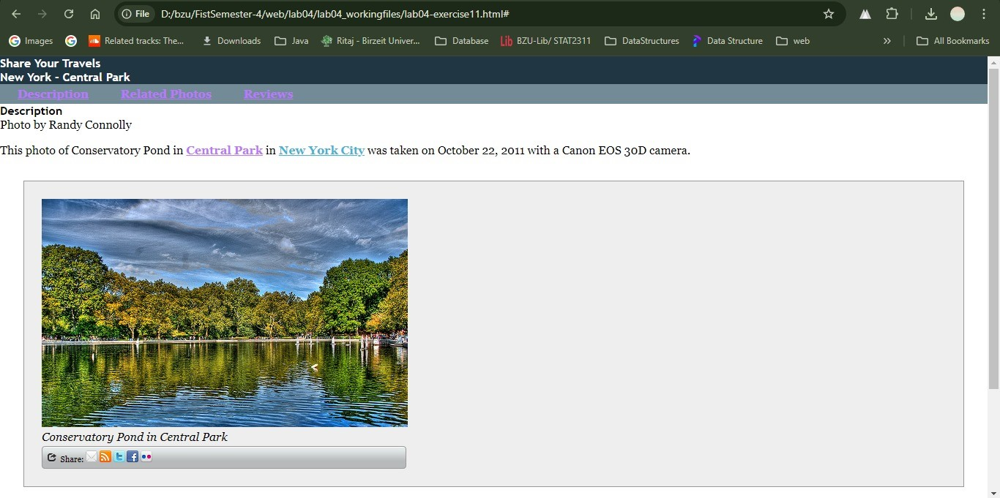
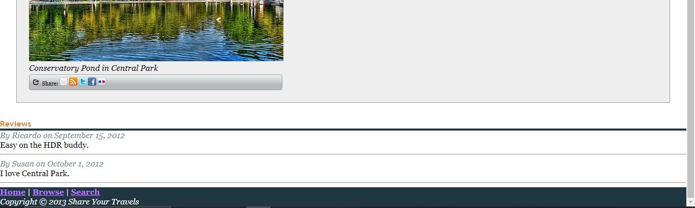

Hello! I am a recent computer science graduate with a interest in web development. I enjoy creating efficient websites, and I am constantly learning new technologies to enhance my skills. My focus is on both front-end and back-end development, and I love solving challenges that improve user experience.
This is a simple bakery page created using HTML, CSS, to showcase my work and skills.
A simple task to improve my skills in both html, CSS by creating this websites with a lot of tricks
 